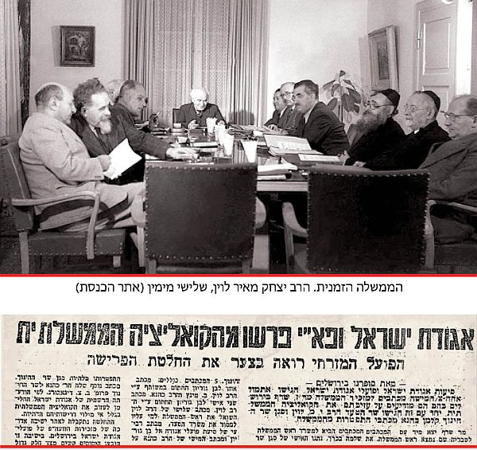

‘הצופה’ כ”ט אלול תשי”ב. אגודת ישראל ופועלי אגודת ישראל פרשו מהממשלהחגיגות לעומת האמת
בימים בהם החוגים החרדים לדבר ה’ מוחאים כפיים למינוי הרב ליצמן לתפקיד שר בממשלה, “בית משיח” מביא את דעת הרבי הברורה בנידון כמו גם את עמדתה הברורה והנחרצת של מועצת גדולי התורה במשך כשישים שנה שקבעה כי שר בממשלה פירושו שותפות מלאה לעבירות דאורייתא שנעשות על ידי ממשלת ישראל * בשלהי אלול עדיין שואלים: “מ
בימים בהם החוגים החרדים לדבר ה’ מוחאים כפיים למינוי הרב ליצמן לתפקיד שר בממשלה, “בית משיח” מביא את דעת הרבי הברורה בנידון כמו גם את עמדתה הברורה והנחרצת של מועצת גדולי התורה במשך כשישים שנה שקבעה כי שר בממשלה פירושו שותפות מלאה לעבירות דאורייתא שנעשות על ידי ממשלת ישראל * בשלהי אלול עדיין שואלים: “מה נשתנה?”

כלי התקשורת החרדים חוגגים. הנה סוף סוף, שר חרדי ממפלגת “אגודת ישראל” יושב בממשלה לאחר הפסקה של יותר משישים שנה… ממש חג ליהדות החרדית. אנשי תקשורת ופרשנים ניתחו מכל כיוון את משמעות הסכמתה של מועצת גדולי התורה לקבלת תפקיד השר, וזאת לאחר עשרות שנים שבהם סירבה מטעמים אידיאולוגיים לקבל תפקידים הנושאים באחריות.
השר החדש ר’ יעקב ליצמן ניסה לגמד את חשיבות ההחלטה, ובצאתו מישיבת מועצת גדולי התורה הגיב: “אני רוצה להגיד כמה מילים על עצם ההחלטה — אין כל שינוי בטיפול ובסיוע ועזרה בניהול של משרד הבריאות ולא יהיה שום שינוי בין סגן השר ולא שר. אין שום משמעות. הכול מה שהיה זה מה שיהיה. לעשות יותר טוב אפשר בכל פעם, אבל זה לא יהיה בגלל השר, זה יהיה כי בגלל שאני צריך להשתפר, ולכן לא יהיה שום שינוי”.
לדידו של הרב ליצמן לא יהיה שום שינוי משמעותי בין תפקידו הנוכחי כסגן שר לתפקידו הבא כשר, אולם הוא מעדיף לדבר על תפקידו המעשי ופחות על משמעות השינוי המהותי וההיסטורי שאירע בשבוע האחרון בכל הקשור לקשר שבין היהדות החרדית לממשלת ישראל.
עמדתה של מועצת גדולי התורה בעשרות השנים האחרונות, חפפה במידה מסוימת לדעתו של הרבי מה”מ, אשר מביט על כל דבר בעולם במשקפי ההלכה הצרופה. דעתו של הרבי הייתה ברורה ונחרצת — שר בממשלה נושא בכל האחריות למעשי הממשלה, ובוודאי לפעולות שמבצע המשרד עליו מופקד. הרבי קבע באופן ברור, כי רוב משרדי הממשלה קשורים ישירות לדבר עבירה.
אשר על כן, חרף הדברים שאינם ערבים לאוזן שהתרגלה לחגיגות ה”שר החרדי” החדש, הרי שהאמת שונה לחלוטין, ומי שירא את ה’, אינו יכול לשמוח על כך שמתמנה שר חרדי.
כיצד הכול החל? מתי התקבלה ההחלטה שלא להיות שותפים בממשלת ישראל? על כך בשורות הבאות.
יחיד מול רבים
עם פרוץ מלחמת השחרור, הוקמה בארץ ישראל ממשלה זמנית בה היה חבר הרב יצחק מאיר לוין, יו”ר “אגודת ישראל” וחתן האדמו”ר ה”אמרי אמת” מגור. הרב לוין היה תלמיד חכם מופלג, אישיות משכמה ומעלה.
לאחר שנערכו הבחירות הראשונות לכנסת והוקמה הממשלה הראשונה, הצטרף אליה הרב יצחק מאיר לוין כנציג “אגודת ישראל” וכיהן בתפקיד שר הסעד.
לרב לוין נדרשו כוחות נפש אדירים לשבת בממשלה לצד אנשי השמאל והציונים הדתיים, אך “אגודת ישראל” בראשות מנהיגיה הרוחניים סברו כי באמצעות הישיבה בממשלה יוכלו לקבל תקציבים הולמים להקמתה מחדש של ממלכת התורה שליקקה את פצעיה לאחר שנות השואה והזעם.
באותן שנים, העליה הגדולה מכל רחבי תבל הייתה בעיצומה, ומוסדות התורה הלכו וגדלו במהירות רבה. במקביל לתקציבים, קיוו ראשי “אגודת ישראל” לשמור ולו במעט על קדשי ישראל ועל הצביון היהודי שישרור בארץ ישראל במסגרת חקיקת החוקים ותקנת תקנות במגוון רחב של נושאים.
מכשולים אדירים עמדו בדרכו של הרב לוין, אך כדי לממש את המטרות האמורות של אגודת ישראל, המשיך לשבת בממשלה למרות חילוקי הדעות הקשים שהתגלעו עם שרי הממשלה, בפרט אלו מהצד השמאלי של המפה. ממשלה זו הייתה ידועה במעשיה החמורים נגד הדת, ובפרט בקרב העולים ממדינות המזרח שפקידי הממשלה פעלו להעבירם מדתם.
המאבק הגדול כנגד גיוס בנות
ההבלגה התפוגגה לחלוטין כאשר החל המאבק הגדול כנגד גיוס בנות. אנשי השמאל ששלטו שלטון ללא מצרים בארץ הקודש, ניסו לחוקק חוקים כאוות נפשם, גם כאשר הדבר גרם בפועל לכפיה חילונית נגד שומרי המצוות. כך נוצרה יוזמה לגיוס בנות לצה”ל, מה שגרם לסערה רבתי בקרב היהדות הדתית והחרדית בארץ הקודש וברחבי תבל. נפתח מאבק מר ונוקב שכלל מחאות והפגנות על ידי כל פלגי היהדות החרדית.
בשלהי קיץ תשי”ב הסערה הלכה והתעצמה, ובראש חודש אלול נערכה הפגנת ענק, כאשר הדובר הראשי היה הפוסק החב”די הרב ר’ חיים נאה, אשר כיהן גם כחבר ועד הרבנים של “אגודת ישראל”.
בשבועות הבאים החלו דיבורים ראשונים על יציאת “אגודת ישראל” מהקואליציה. אדמו”רים, רבנים ואישי ציבור מהיהדות החרדית הבינו כי אי אפשר עוד לשבת ליד שולחן הממשלה כאשר זו עומדת לגייס בכפיה את בנות ישראל. בכ”ח באלול הודיע הרב לוין על פרישה מהממשלה ומהקואליציה בהוראת ראשי מועצת גדולי התורה. במקביל, גם מפלגת פא”י הודיעה על פרישה. בעיתוני ערב ראש השנה התבשר עם ישראל על שינוי מהותי במדיניות החרדית: לא עוד שיתוף פעולה עם הממשלה, אלא מעתה היראים לדבר ה’ יהיו באופוזיציה וילחמו בעוז במחרפי ה’.
המאבק הגדול של היהדות החרדית פעל את פעולתו באופן חלקי, שכן החוק לגיוס נשים התקבל בממשלה ובכנסת, אך עם זאת הוצע שכל בת שמצהירה על עצמה כשומרת מצוות, תקבל פטור מיידי. המאבק שקט לבינתיים.
למרות זאת, מועצת גדולי התורה של אגודת ישראל הבינה כי גם כעת אין אפשרות לשבת בממשלה אשר שמה לה למטרה לרמוס את תורת ישראל. לכולם היה ברור כי מי שיושב ליד שולחן הממשלה, נושא באחריות אמיתית לעבירות הנעשות בחסות ממשלת ישראל.
שר פירושו — שותף לכל העבירות
למרות פרישת החרדים, אנשי ‘המזרחי’ נותרו לשבת ליד שולחן הממשלה וליהנות ממנעמי השלטון. במהלך השנים הבאות התבטא הרבי בחריפות רבה נגד העובדה שיהודים דתיים הם חלק מהממשלה ומהקואליציה. באגרות מיוחדות הבהיר כי היושבים בממשלה ובקואליציה נושאים באחריות מלאה לכל החלטות הממשלה. במיוחד הדגיש הרבי את אחריותו של “שר הדתות” אשר במסגרת תפקידו הוא מזרים תקציבים לכנסיות ובעצם הוא שותף לעבודה זרה.
יחד עם זאת, הרבי עודד את ההשתתפות בהצבעה במערכת הבחירות להצביע לחרדים לדבר השם. היו שתמהו אם אין סתירה בין שתי העמדות — כאשר מצד אחד יהודי שומר מצוות נוטל חלק בבחירות ובהכנסת נציגים לכנסת, ומן הצד השני — חל איסור מוחלט על שותפות בממשלה.
הרבי השיב על כך במכתבים שונים ששיגר לרבנים ולאישי ציבור. וכך כתב אל הגאון החסיד הרב מנחם זאב גרינגלאס מקנדה, לקראת הבחירות שהתקיימו בשנת תשט”ו:
“בענין ההשתתפות בהבחירות, הנה אנו אין לנו אלא דברי נשיאנו, היינו כ”ק מו”ח אדמו”ר אשר גם עתה עומד במקום ומשמש וגם כאן, ולהבחירות לכנסת הראשונה צוה והשתדל שישתתפו בהם, שמזה מובן שלא רק שמותר הדבר, אלא שמחוייבים בזה. ואף שכניסה בקאאליציע, לדעתי, אסורה מפני השתתפות בגזירת גזירות נגד [הדת] וכו’—
“הנה כל מי שיש בידו תעודת אזרח, ובמילא יש בידו רשות הבחירה (ובעצם לקיחתו את התעודה הרי מודה, ולא באונס, בההנהגה דשם), ואם לאחרי זה אינו משתתף בבחירות, וממנו רואים וכן עושים עוד אחרים, ויש מקום לומר שעל ידי זה תהיה הכרעה בחוק “גדול” או אפילו קטן — בעת שיצביעו על החוק שלא כדבעי, הרי תקלת הרבים, ח”ו, תלויה גם בו. ועדיין לא מצאתי האיש — וועלכער זאל האבען ברייטע פלייצעס [= שיש לו כתפיים רחבות] שיכול לשאת תקלה עליו” (אגרות קודש חי”א אגרת ג’תקנט).
עמדתו של הרבי הינה עקרונית: כאשר יהודי בוחר במפלגה השומרת על קדשי ישראל, בכך הוא נאבק בממשלה ובחוקים העתידים להתקבל בקדנציה הבאה. אך כאשר משתתפים בקואליציה ובממשלה, הופכים להיות חלק מביצוע הגזירה נגד הדת.
מספר שבועות אחר כך שוב מבהיר הרבי את דעתו הקדושה, כי על פי דין תורה אסור להשתתף בקואליציה. גם כאן מדגיש הרבי את ההבדל בין בחירה לכנסת לבין ישיבה בממשלה:
“בהשתתפותו בהבחירות נותן תוספות כח בהמצב הדתי ואינו נושא אחריות בהחוקים והגזירות כו’, כי הרי בידו למחות בכל תוקף נגד פגיעה קלה בדת ישראל ואפילו מנהג וכו’, מה שאין כן כשנכנס בקאאליציע הרי נושא באחריות — בהשתתפותו — בכל החוקים והגזירות וכו’. ואין להאריך בדבר הפשוט” (אגרות קודש חי”א אגרת ג’תרעז).
ביום ב’ במר–חשוון תש”כ, נערכו בחירות לכנסת הרביעית ואנשי “המזרחי” כבר רקמו תכניות לגבי תפקידיהם המיניסטריאליים בממשלה הבאה. הרבי ביקש למנוע זאת כדי להסיר את החרפה ולמנוע את המצב האבסורדי שבו יהודים שומרי מצוות נושאים באחריות לעוברי עבירה.
שלושה ימים לאחר יום הבחירות שיגר הרבי מכתב בנושא זה אל הגאון הרב שלמה יוסף זווין, מחשובי רבני חב”ד שעמד גם בקשרים טובים עם ראשי ‘המזרחי’ (ההוספות בסוגריים מרובעות אינן במקור): “דעתי ברורה, שההשתתפות בקואוליציא (ועל אחת כמה וכמה, שזאת אומרת, במשרת מיניסטר [שר] המביא לפועל דבר עבירה כו’) אסורה בהחלט על פי שולחן ערוך. וענין דעבירה נמצא ברוב משרדי המיניסטריום [הממשלה] ואולי גם בכולם. ולכל לראש במשרד הדתות, לשון רבים, ששם איסורי עבודה זרה ממש. ונגדל פי כמה כאשר חותם על הפקודה איש מניח תפילין [שרי הדתות היו מטעם “המזרחי”], שזוהי הצהרה נוספת שיש לשתף ר”ל וכו’ [דהיינו רחמנא ליצלן כמו המאמין בה’ אך גם מתפלל לעבודה זרה]”.
והרבי מוסיף במכתבו, כי ברור שיהיו שיביעו תמיהה מדוע דווקא משרד הדתות שותף לעבודה זרה, בו בזמן שדווקא משרד זה הוא המתקצב העיקרי לאחזקת נושאי דת יהודיים. על כך משיב הרבי, כי אין לסחור במצוות ועבירות, ובמיוחד כאשר אחת מהעבירות היא אחת מהשלוש עבירות שנאמר עליהן ‘יהרג ואל יעבור’ והיא עבודה זרה כפשוטה.
בסיום מכתוב מבקש הרבי מהרב זווין לפעול למניעת כניסת הדתיים לממשלה. הרבי לא משלה את מקבל מכתבו בהצלחה בעניין זה בדרך הטבע, ומסיים: “והרי ארץ הקודש מורגלת בניסים, תבוא עליו ברכה וזכות הרבים מסייעתו” (אגרות קודש חי”ט אגרת ז’סו).
הרב זווין המשיך להקשות אך הרבי השיב והבהיר, כי איסור חמור הוא לכהן כשר בממשלה.
כשפרצה סערת “חוק השבות” הידוע בכינויו “מיהו יהודי”, המאשר גיור גם למי שלא התגייר כהלכה, פתח הרבי במאבק אדיר למען תיקון חוק כדי שתתווסף המילה “כהלכה” לחוק השבות. בממשלת ישראל ישבו גם שרי ה”מזרחי” והרבי תבע מהם כי יתפטרו ולבל ישאו באחריות הכבדה, של התבוללות העם היהודי בארץ ישראל.
חסידי חב”ד יחד עם חוגים רבים נוספים ערכו עצרות זעקה לצד שורה של פעולות מחאה — אך לשווא. פעמים רבות חזר הרבי בפומבי על עמדתו ששרי ה’מזרחי’ אחראים להתבוללות הנוראה ועליהם להתפטר, אך הם לא נשמעו לקריאות שהגיעו מנשיא הדור.
הנה קטע מתוך מברק של הרבי אל הרה”ג הרב איסר יהודה אונטרמן הרב הראשי לישראל: “כל בא–כח דתינו היושב עתה בממשלה מוסיף עוד לכל זה גושפנקא דתית, והיפך דין תורת אמת, ואי אפשר לחזק הביטחון והמוראל דעם ישראל על ידי היפך האמת” [המברק הודפס בלקו”ש ובאג”ק, אך בידי כותב השורות העתקת המכתב ובראשו צוין ‘מברק’, כאשר הנוסח שונה מעט מהמקורות הנ”ל].
ישיבה בקואליציה מהווה שותפות
בשנת תשל”ז אירע המהפך המפורסם, כאשר מפלגת הליכוד ניצחה לראשונה בבחירות ועד מהרה הרכיבה ממשלה כשבראשותה עמד מר מנחם בגין, שנחשב ‘ימני’ ואוהב דת.
בעת מלאכת הרכבת הקואליציה, התלבטו אנשי “אגודת ישראל” האם כדאית הכניסה לממשלה. כהצעת פשרה החליטה לבסוף מועצת גדולי התורה, כי אגודת ישראל אמנם תיכנס לקואליציה אך לא תישא בתפקידי ‘שר’ או ‘סגן שר’, כדי שלא להיות שותפים באחריות על החוקים והמעשים המבוצעים על ידי משרדי הממשלה, זאת כהמשך להחלטה ההיסטורית האמורה שהתקבלה בשנת תשי”ב.
גם לאורך השנים הבאות, הרבי המשיך לנהל את המאבק למען תיקון חוק השבות, והפציר בכל חברי הקואליציה הדתיים והחרדים, שיפרשו ממנה על מנת שלא להיות שותפים בחוק הגורם התבוללות רבתי. אנשי ‘אגודת ישראל’ וה’מזרחי’ לא שעו להפצרות הרבי והמשיכו לתמוך בממשלה למרות הכל.
בבחירות שהתקיימו בשנת תשד”מ, נכנסה לראשונה מפלגת ש”ס שהסמכות הרוחנית שלה כבר לא הייתה חברי מועצת גדולי התורה. ראשי מפלגת ש”ס נענו עד מהרה לקבל תפקידי שרים וסגני שרים. הפלג הליטאי של ‘אגודת ישראל’ ביקש אף הוא לקבל תפקיד מכובד, ור’ מנחם פרוש התמנה לראשונה לתפקיד סגן שר העבודה והרווחה. היו שטענו אז כי הדבר נעשה למורת רוחה של מועצת גדולי התורה של ‘אגודת ישראל’.
הסכמה רשמית מלאה לקבלת תפקיד ‘סגן שר’ התקבלה לאחר בחירות תשמ”ט, כאשר הרב משה זאב פלדמן, נציג מובהק של הסיעה המרכזית באגודת ישראל, מונה לסגן שר העבודה והרווחה. כשנה ומחצה לאחר מכן, מונה הרב אליעזר מזרחי, לתפקיד סגן שר הבריאות.
הקו שהוביל להסכמה לתפקיד ‘סגן שר’, היה נעוץ בעובדה ש’סגן שר’ אינו נושא באחריות לנעשה במשרדו, שכן סגני שרים הם בסך הכול ממלאי תפקידים שאותם העניק להם השר שמעליו הנושא בכל האחריות.
כרסום מתמיד בעמדת גדולי ישראל
גם במקרה זה התקיימו דברי חז”ל “היום אומר לו עשה כך ומחר אומר לו עשה כך”. במשך השנים המשיך הכרסום בעמדה הנוקשה שהובילה כל השנים את ‘אגודת ישראל’, ולאחר ‘התרגיל המסריח’ בשנת תש”נ, כאשר הממשלה הצרה נשענה על ‘אגודת ישראל’, הותנה בהסכם הקואליציוני כי סגני השרים של אגודת ישראל יהיו במעמד של שר (מה שגרם לבג”צ לקבוע כי הגדרה זו אינה חוקית).
אף על פי כן, בשנת תשס”ט מונה הרב יעקב ליצמן, חסיד גור ומראשי ‘אגודת ישראל’ לתפקיד סגן שר הבריאות כאשר הותנה כי מעליו לא יהיה שר. ההגדרה שלו הייתה “סגן שר במעמד של שר”, במלוא מובן המילה והאחריות. בהגדרה זו עדיין היה משום הליכה על חבל דק, שכן בהגדרתו זו לא יכול היה להשתתף בהצבעות ובהחלטות של ממשלת ישראל ולא לחתום על מסמכים חשובים הדורשים דווקא את חתימתו של השר. בכך קיוו הלוליינים הפוליטיים ביהדות החרדית, ליהנות מכל העולמות: גם לא לקחת אחריות מיניסטריאלית ולהיות שותפים לחוקים שונים שנחקקו, אך גם יקבלו מעמד של מקבלי החלטות במשרדיהם.
כאמור, בשבוע שעבר נפל דבר בישראל. מועצת גדולי התורה שינתה את עמדתה ההיסטורית שנשענה על גדולי התורה בעבר ועל עקרונות מהותיים בכל הקשור לאחריות הציבור החרדי בחקיקת חוקי הממשלה שיש בהם עבירות רבות, והורתה לרב ליצמן לקבל תפקיד של ‘שר’ במלוא משמעות המושג והאחריות.
הרב ליצמן בדברי תגובתו ניסה להסיח את הדעת ממהות ההחלטה ההיסטורית, והסיט את האש כנגד ראשי מפלגת “יש עתיד” ובראשו יאיר לפיד שגרם לכך שהיהדות החרדית תאלץ לרדת מן הגדר ולהחליט סוף סוף, האם הם ‘בפנים’ או ‘בחוץ’; האם היהדות החרדית שותפה מלאה להחלטות הממשלה, או שיוחלט כי יוותרו על תפקיד ‘סגן שר’ העיקר שלא להיות שותפים לדבר עבירה. וכך אמר ליצמן: “אני שמח שסוף סוף אחרי שלוש שנים בכנסת שיש ללפיד ול’יש עתיד’ הישג — שאני אהיה שר בעקבות הבג”צ. אין לו שום הישגים בדיור ובכלכלה ובחברה ובשום דבר, הדבר היחידי שהוא הוסיף לי קצת כסף למשכורת. אני מוחל לו טובות, אבל אחרי החלטת מועצת גדולי התורה אני מכבד”.
מבחינת הרב ליצמן, כל השינוי הוא בכך ש”הוא הוסיף לי קצת כסף למשכורת”!!
דווקא לפיד ידע לשים את האצבע בדיוק על הנקודה הכואבת, והוא כתב מיד לאחר קבלת ההחלטה של מועצת גדולי התורה: “..מדובר ברגע היסטורי. ציבור גדול וחשוב נכנס מתחת לאלונקה הישראלית. הם יהיו ליד שולחן הממשלה בעסקת השבויים הבאה, במלחמה הבאה, בהסכם השלום הבא. הם יצטרכו להרים יד ולהצביע כשהממשלה תכריע הכרעות קשות על תקציב הבטחון, על מתווה הגז, על הרווחה ועל הבריאות”. והוא מסיים: “מעל לכל — זוהי לקיחת אחריות. חיים משותפים מתחילים באחריות משותפת. אני מברך את מועצת גדולי התורה על החלטתה”…
הרב ליצמן, עם היותו פעלתן מוצלח ואיש עשיה מהולל, יהיה מעתה אחראי באופן ישיר על חילולי שבת המתקיימים בבתי הרפואה, כמו גם על ניתוחי מתים המתקיימים כמעשה שמדי יום ביומו. וכך, במקום שחברי הכנסת של ‘אגודת ישראל’ ייאבקו בניתוחי מתים, כעת האחריות האמיתית על ניתוחים שלאחר המוות יהיו בידי הרב ליצמן. כך גם בעניין חילולי השבת הפומביים המתקיימים במתקנים הרפואיים השונים ברחבי הארץ. זאת ועוד: הרב ליצמן מעתה יישב בישיבות הממשלה ויהיה שותף מלא לכל החוקים והתקציבים למען גיורים ונישואין מהירים, תחבורה בשבת ופתיחת עסקים ביום השבת, מסירת שטחים ועוד רבות. מעתה הוא יהיה שותף מלא לעבירות רבות שממשלת ישראל במדיניותה המוצהרת מבצעת.
למרבה הצער, חוגים חרדים מביעים שמחה נוכח המינוי הנכסף שהגיע סוף סוף לאחר עשרות שנים, ואיש לא הזכיר את דעת התורה הצרופה עליה דיבר הרבי פעמים כה רבות אשר בה אחזו כל גדולי ישראל במשך כל השנים.
ואם בכל זאת יקשה המקשן — והרי הרב ליצמן כבר התמנה לשר, אם כן, אולי בדיעבד כדאי שיוותר בתפקידו ויפעל מבפנים. על כך השיב הרבי בדברים שנאמרו לפני 45 שנים והולמים במדויק את המצב הנוכחי:
“אין להתבייש מלעשות את הצעד הזה של התפטרות ממשרת שר. על מנת למנוע קרבן בנפש כדאי לאבד את כל המשרות. סוף סוף שום אדם לא נולד מיניסטר [שר], וישנם רק כך וכך שנים מאז נתמנה פלוני או פלוני למיניסטר, כך שלא יהא בזיון בהתפטרות… אם לא יתפטר — לא יועיל לו הדבר כיון שסוף סוף יסלקו אותו ממשרתו כאשר יתברר שאי אפשר לסמוך עליו, שכן אם הוא מסוגל לסחור בשלחן ערוך (וזה בשעה שהוא עצמו יהודי מאמין ושומר תורה ומצוות) — עלול הוא לסחור גם בשאר הענינים” (ליקוטי שיחות חל”ט, ע’ 260).
מקורות: תורת מנחם, שיחות קודש, ליקוטי שיחות, אגרות קודש, ‘נודע בשיעורים’, ‘המודיע’, ‘דבר’, ‘הצופה’, ארכיון הרי”מ לוין, אתר ‘הכנסת’, ועוד.